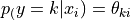

gemclus.nonparametric.CategoricalWasserstein¶
- class gemclus.nonparametric.CategoricalWasserstein(n_clusters=3, max_iter=1000, learning_rate=0.001, metric='euclidean', ovo=False, solver='adam', verbose=False, random_state=None)[source]¶
The CategoricalWasserstein is a nonparametric model where each sample is directly assign a probability vector of as conditional clustering distribution. Consequently, the parameters do not depend on the value of
 .
.
Contrarily to other models, the categorical distribution can not be used for clustering samples that were not part of the training set and does not support batching as well.
The model optimises the parameters to maximise the Wasserstein GEMINI.
- Parameters:
- n_clustersint, default=3
The maximum number of clusters to form as well as the number of output neurons in the neural network.
- max_iter: int, default=1000
Maximum number of epochs to perform gradient descent in a single run.
- learning_rate: float, default=1e-3
Initial learning rate used. It controls the step-size in updating the weights.
- metric: {‘cosine’, ‘euclidean’, ‘l2’,’l1’,’manhattan’,’cityblock’},
default=’euclidean’ The metric to use in combination with the Wasserstein objective. It corresponds to one value of PAIRED_DISTANCES. Currently, all metric parameters are the default ones.
- ovo: bool, default=False
Whether to run the model using the Wasserstein OvA (False) or the Wasserstein OvO (True).
- solver: {‘sgd’,’adam’}, default=’adam’
The solver for weight optimisation.
‘sgd’ refers to stochastic gradient descent.
‘adam’ refers to a stochastic gradient-based optimiser proposed by Kingma, Diederik and Jimmy Ba.
- verbose: bool, default=False
Whether to print progress messages to stdout
- random_state: int, RandomState instance, default=None
Determines random number generation for weights and bias initialisation. Pass an int for reproducible results across multiple function calls.
- Attributes:
- optimiser_: `AdamOptimizer` or `SGDOptimizer`
The optimisation algorithm used for training depending on the chosen solver parameter.
- labels_: ndarray of shape (n_samples)
The labels that were assigned to the samples passed to the
fit()method.- n_iter_: int
The number of iterations that the model took for converging.
- __init__(n_clusters=3, max_iter=1000, learning_rate=0.001, metric='euclidean', ovo=False, solver='adam', verbose=False, random_state=None)[source]¶
- fit(X, y=None)¶
Compute GEMINI clustering.
- Parameters:
- X{array-like, sparse matrix} of shape (n_samples, n_features)
Training instances to cluster.
- yndarray of shape (n_samples, n_samples), default=None
Use this parameter to give a precomputed affinity metric if the option “precomputed” was passed during construction. Otherwise, it is not used and present here for API consistency by convention.
- Returns:
- selfobject
Fitted estimator.
- fit_predict(X, y=None)¶
Compute GEMINI clustering and returns the predicted clusters.
- Parameters:
- X{array-like, sparse matrix} of shape (n_samples, n_features)
Training instances to cluster.
- yndarray of shape (n_samples, n_samples), default=None
Use this parameter to give a precomputed affinity metric if the option “precomputed” was passed during construction. Otherwise, it is not used and present here for API consistency by convention.
- Returns:
- y_predndarray of shape (n_samples,)
Vector containing the cluster label for each sample.
- get_gemini()¶
Initialises a
gemclus.GEMINIinstance that will be used to train the model.- Returns:
- gemini:
gemclus.GEMINIinstance
- gemini:
- get_params(deep=True)¶
Get parameters for this estimator.
- Parameters:
- deepbool, default=True
If True, will return the parameters for this estimator and contained subobjects that are estimators.
- Returns:
- paramsdict
Parameter names mapped to their values.
- predict(X)¶
A reference implementation of a prediction for a classifier.
- Parameters:
- X{array-like, sparse matrix}, shape (n_samples, n_features)
The input samples.
- Returns:
- yndarray of shape (n_samples,)
The label for each sample is the label of the closest sample seen during fit.
- predict_proba(X)¶
Probability estimates that are the output of the neural network p(y|x). The returned estimates for all classes are ordered by the label of classes.
- Parameters:
- X{array-like, sparse matrix} of shape (n_samples, n_features)
Vector to be scored, where n_samples is the number of samples and n_features is the number of features.
- Returns:
- Tarray-like of shape (n_samples, n_clusters)
Returns the probability of the sample for each cluster in the model.
- score(X, y=None)¶
Return the value of the GEMINI evaluated on the given test data.
- Parameters:
- X{array-like, sparse matrix} of shape (n_samples, n_features)
Test samples.
- yndarray of shape (n_samples, n_samples), default=None
Use this parameter to give a precomputed affinity metric if the option “precomputed” was passed during construction. Otherwise, it is not used and present here for API consistency by convention.
- Returns:
- scorefloat
GEMINI evaluated on the output of
self.predict(X).
- set_params(**params)¶
Set the parameters of this estimator.
The method works on simple estimators as well as on nested objects (such as
Pipeline). The latter have parameters of the form<component>__<parameter>so that it’s possible to update each component of a nested object.- Parameters:
- **paramsdict
Estimator parameters.
- Returns:
- selfestimator instance
Estimator instance.